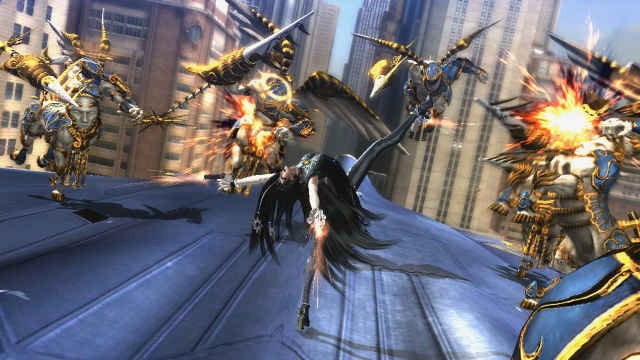
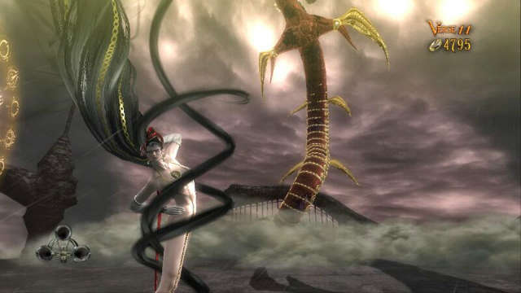
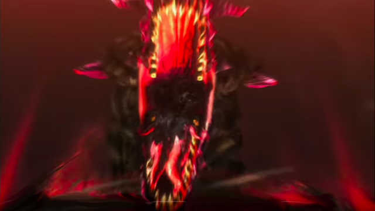

The 4 guns witchLike every Umbran witches, Bayonetta fights her foes using 4 guns. Her favorites weapon sets are the blue one Love is Blue from Bayonetta 2 and the red one Scarborough Fair from the first Bayonetta. It has infinite ammo thanks to her Umbran magic. |
 |
|  |
with hair clothesYes. She was naked the whole time (if hair doesn't count). Her clothes disappear when she uses them to summon Infernal Demons. |
that can summon demonsWitches make a pact with the devil, allowing them to summon demons from Inferno. However, when they die, their soul gets dragged down to hell and they will suffer for eternity. Bayonetta has to kill agents of Paradiso everyday, or Inferno will gets his due. |
 |